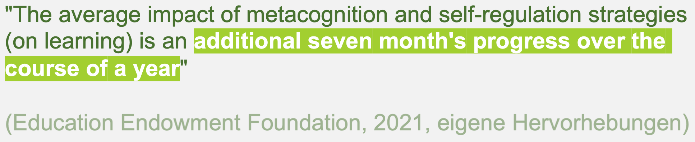
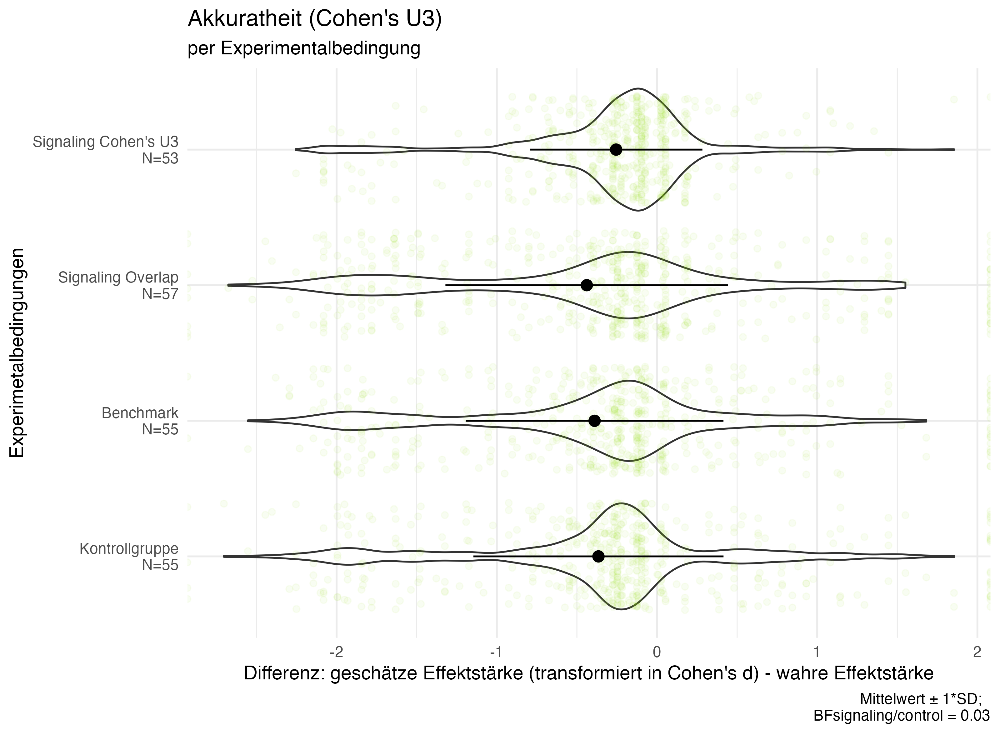

Teachers’ Engagement With Educational Science
How to Communicate Findings From Educational Science in a User-Friendly Way to Teachers
Institut für Schul- und Unterrichtsentwicklung
Dienstag, den 23. Juli, 2024
Einführung
Primärforschung (Adesope et al., 2017) |
Sekundärforschung  (Adesope et al., 2017) |
Einführung
| Primärforschung (Adesope et al., 2017) |
Zeitungsartikel  (Michler, 2014) |
| Sekundärforschung (Adesope et al., 2017) |
Pressemitteilungen  (Rijkhoek, 2019) |
Einführung
| Primärforschung (Adesope et al., 2017) |
Zeitungsartikel (Michler, 2014) |
Podcasts (Wisniewski, 2023) |
| Sekundärforschung (Adesope et al., 2017) |
Pressemitteilungen (Rijkhoek, 2019) |
Clearinghouse-Zusammenfassungen  (Knogler et al., 2017) |
Einführung
| Primärforschung (Adesope et al., 2017) |
Zeitungsartikel (Michler, 2014) |
Podcasts (Wisniewski, 2023) |
| Sekundärforschung (Adesope et al., 2017) |
Pressemitteilungen (Rijkhoek, 2019) |
Clearinghouse-Zusammenfassungen (Knogler et al., 2017) |
Evidenzinformierte Schulpraxis
Evidenz = systematisch gewonnene Informationsquelle (z.B. Bromme et al., 2014; Döring & Bortz, 2016; Shavelson et al., 2021)
(z.B. Bell et al., 2010; Coldwell et al., 2017; Double et al., 2020; Filderman et al., 2018; Kennedy et al., 2017)
Ablauf evidenzinformierter
Schulpraxis
_adapted.png)
Eigene Adaption des Prozessmodells nach Groß Ophoff et al. (2023)
Barrieren evidenzinformierter Schulpraxis
Theoretische Implikationen evidenzinformierter Schulpraxis
praktische Umsetzung durch Lehrpersonen
- Vielfältige Barrieren, die die Realisierung evidenzinformierter Praxis erschweren bzw. hemmen (Dagenais et al., 2012; Hemsley-Brown & Sharp, 2003; Schmidt, 2024; van Schaik et al., 2018)
_adapted_barriers.png)
Eigene Adaption des Prozessmodells nach Groß Ophoff et al. (2023)
Wissenschafts-
kommunikationsformate
| Primärforschung (Adesope et al., 2017) |
Zeitungsartikel (Michler, 2014) |
Podcasts (Wisniewski, 2023) |
| Sekundärforschung (Adesope et al., 2017) |
Pressemitteilungen (Rijkhoek, 2019) |
Clearinghouse-Zusammenfassungen (Knogler et al., 2017) |
Clearinghouses
 |
 |
 |
Statistische Kommunikation in Clearinghouses
| Textliche Aufbereitung | Visuelle Aufbereitungen | |
|---|---|---|
| Inferenzstatistik | ||
| Effektstärken |  |   |
(Backfisch et al., 2021; Diery et al., 2021; Education Endowment Foundation (EEF), 2021; What Works Clearinghouse, Institute of Education Sciences, U.S. Department of Education, 2021, 2022; Wiesbeck et al., 2018)
Forschungsdesiderat
_adapted_barriers_black.png)
Eigene Adaption des Prozessmodells nach Groß Ophoff et al. (2023)
Forschungsdesiderat
_adapted_3-Phase_misslungen.png)
Eigene Adaption des Prozessmodells nach Groß Ophoff et al. (2023)
Forschungsdesiderat
_adapted_inadäquat.png)
Eigene Adaption des Prozessmodells nach Groß Ophoff et al. (2023)
Forschungsdesiderat
_adapted_gestoppt.png)
Eigene Adaption des Prozessmodells nach Groß Ophoff et al. (2023)
Forschungsdesiderat
Eigene Adaption des Prozessmodells nach Groß Ophoff et al. (2023)
→ Korrekte Interpretation statistischer Informationen notwendige, aber nicht hinreichende Bedingung für evidenzinformiertes Handeln
- Kaum bildungswissenschaftliche Studien zur Rezeption durch Lehrpersonen (z.B. Fitzgerald & Tipton, 2022; Lortie-Forgues et al., 2021; Merk et al., 2023)
- Rezeption durch wissenschaftliche Laien = interdisziplinäres Forschungsfeld (Hanel et al., 2019; Hanel & Mehler, 2019; Kale et al., 2021; z.B. Kim et al., 2022; Kühberger et al., 2015; McPhetres & Pennycook, 2020; Sotos et al., 2009) …
- … mit überwiegend experimentellen Studiendesigns
- … mit eklektischen Forschungserkenntnissen
Eigene Forschungstätigkeiten
Studie 1 
Wie interpretieren Lehrpersonen verschiedene statistische Beschreibungen in Pressemitteilungen?
Studie 2

Können Lehrpersonen verschiedenen Interpretationsprofilen zugeordnet werden?
Studie 3 
Inwieweit steigern Anreicherungen in Visualisierungen die Akkuratheit der Interpretation?
Studie 1
Wie interpretieren Lehrpersonen verschiedene statistische Beschreibungen in Pressemitteilungen?
Publiziert in Teaching and Teacher Eduaction (https://doi.org/10.1016/j.tate.2023.104134)
Design
- N = 414 Lehrpersonen in Deutschland
- Unvollständig rotiertes 5x6 Within-Within-Design
- Within-Faktor 1: Thema
G8
Motivationsförderung in Mathematik
Faktenboxen
PISA
Untertitel in Filmen

- Within-Faktor 2 & unabhängige Variable: statistische Beschreibung
- Standard Signifikanz-Aussage
- Definition des p-Wertes
- Beschreibung Bayes Faktor
- Beschreibung von Cohen’s d
- Beschreibung von Cohen’s U3
- Kombinierte Aussage aus Inferenzstatistik und Effektstärke
- Within-Faktor 1: Thema

 |
 |
|
 |
 |
 |
Abhängige Variablen
- Interpretation als Inferenstatistik

- Interpretation als Effektstärke


Ergebnisse
Forschungsfrage 1: Wie interpretieren Lehrpersonen verschiedene statistische Beschreibungen in Pressemitteilungen?
Keine Differenzierung zwischen Inferenzstatistik und Effektstärke

Studie 2
Können Lehrpersonen verschiedenen Interpretationsprofilen zugeordnet werden?
Im Review-Verfahren bei Learning & Instruction
Unabhängige & abhängige Variablen
- Signifikanz-Stichprobe: N = 138 Lehrpersonen
- Cohen’s U3-Stichprobe: N = 124 Lehrpersonen
Unabhängige Variable
Abhängige Variablen
Interpretation als Inferenstatistik

Interpretation als Effektstärke

Studie 3
Inwieweit steigern Anreicherungen in Visualisierungen die Akkuratheit der Interpretation?
Im Druck in der Zeitschrift für Psychologie
Design
- N = 220 englischsprachige Lehrpersonen
4x10x2x4 Between-Within-Within-Between Design
Between-Faktor 1: Thema
Lesen auf Papier vs. Tablet
Lernen anhand eines Live-Vortrags vs. Video
Lernen mittels Experimentieren vs. Computersimulation
Lernen mittels Erklärvideo mit Untertitel vs. Erklärvideo ohne Untertitel

Within-Faktor 2: präsentierte Effektstärke
d ∈ {−.80; −.65; −.50; −.35; −.20; .20; .35; .50; .65; .80}Within-Faktor 3: Visualisierungsart
- Halfeye plot mit Gruppen auf der x-Achse
- Halfeye plot mit Gruppen auf der y-Achse


- Between-Faktor 4 & unabhängige Variable: Experimentalbedingung
- Kontrollgruppe
- Signaling Cohen’s U3
- Signaling Overlap
- Benchmark


Abhängige Variablen
- Akkuratheit
- Abstrakte Metrik

- Cohen’s U3 Metrik

- Abstrakte Metrik
- Cohen’s U3 Fehlkonzept: Median der U3 Ratings einer Person < 21,2% (kleinster plausibler Wert, der d = −.8 entspricht)


Ergebnisse
Forschungsfrage 3: Inwieweit steigern Anreicherungen in Visualisierungen die Akkuratheit der Interpretation?
| Akkuratheit | Fehlkonzept |
|---|---|
  |
geringere Anzahl an Cohen’s U3-Fehlkonzepten bei Signaling U3-Bedingung  |
Eigene Forschungstätigkeiten
Studie 1
Wie interpretieren Lehrpersonen verschiedene statistische Beschreibungen in Pressemitteilungen?
Studie 2
Können Lehrpersonen verschiedenen Interpretationsprofilen zugeordnet werden?
Studie 3
Inwieweit steigern Anreicherungen in Visualisierungen die Akkuratheit der Interpretation?
Diskussion, Ausblick und Limitationen
Rezeption eine notwendige, aber nicht hinreichende Bedingung für gelingendes evidenzinformiertes Handeln
Eigene Adaption des Prozessmodells nach Groß Ophoff et al. (2023)
Begriffsklärungen


Begriffsklärungen

Modell evidenzbasierten Unterrichts (EBU) nach Rochnia & Gräsel (2022)
“[S]o evidence-based education means integrating individual teaching and learning expertise with the best available external evidence from systematic research” (Davies, 1999, S. 117, eigene Hervorhebung)
“In evidence-informed teaching (…) educational evidence should not be regarded as a “recipe” that can easily be applied to a given problem like a drug can be administered to cure a patient of a headache. When it comes to teaching, educational theories and evidence should instead be regarded as one of several possible sources to guide decisions” (Kiemer & Kollar, 2021, S. 128, eigene Hervorhebung)
“‘Evidence-informed practice in education’ to reflect our view that evidence is just one of a number of factors that influence educational decisions, with educators needing to apply professional judgment, rather than being driven solely by research evidence or data. Many stakeholders use the terms ‘evidence-based’ and ‘evidence-informed’ interchangeably” (Nelson & Campbell, 2017, S. 128, eigene Hervorhebung)
Studie 1: Weitere Ergebnisse

Studie 2: Kovariaten
persönliche Hintergrundsvariablen
- Geschlecht
- Alter
berufsbezogene Hintergrundsvariablen
- Lehrerfahrung (in Jahren)
- Schulart: Gymnasial vs. Nicht-Gymnasial-Lehrperson
- Studium: Universität vs. Pädagogische Hochschule
- politische Funktion (z.B. Schulleitung, Mitglied einer Kontrollgruppe) vs. keine politische Funktion
- Unterrichtsfach: MINT vs. Nicht-MINT
Selbstvertrauen in statistische Interpretation (5-stufiges Likertitem)
Interesse in… (5-stufige Likertitems Bromme et al. (2022))
Vertrauen in… (5-stufige Likertitems Bromme et al. (2022))
Wahrgenommene Komplexität von… (5-stufige Likertitems (Bromme et al., 2022))
… Wissenschaft und Forschung
… Bildungswissenschaften und Bildungsforschung

Skala: Selbstkonzept bezüglich Bildungswissenschaften (Groß Ophoff & Schladitz, 2018)
Skala: Überzeugungen zum Theorie-Praxis-Verhältnis (Schneider & Kulcsar, 2018)

{kind=link}
{kind=link}
{kind=link}
{kind=link}
{kind=link}
{kind=link}
{kind=link}
{kind=link}
{kind=link}
{kind=link}
{kind=link}
{kind=link}
{kind=link}
{kind=link}
{kind=link}
{kind=link}
{kind=link}
{kind=link}
{kind=link}
{kind=link}
{kind=link}
{kind=link}
Studie 3: Anlage

Studie 3: Design der explorativen
Studie
4x6x4 Between-Within-Within Design
Between-Faktor 1: Thema
Lesen auf Papier vs. Tablet
Lernen anhand eines Live-Vortrags vs. Video
Lernen mittels Experimentieren vs. Computersimulation
Lernen mittels Erklärvideo mit Untertitel vs. Erklärvideo ohne Untertitel

Within-Faktor 2: präsentierte Effektstärke
d ∈ {−.80; −.50; −.20; .20; .50; 80}Within-Faktor 3: Visualisierungsart
- Halfeye plot mit Gruppen auf der x-Achse
- Halfeye plot mit Gruppen auf der y-Achse
- Raincloud plot mit Gruppen auf auf der y-Achse
- Gardner-Altman Plot
Studie 3: Weitere abhängige Variablen
- Akkuratheit in Overlap

Overlap Fehlkonzept: Median der Overlap Ratings einer Person < 68,9% (kleinster plausibler Wert, der d = −.8 bzw. d = .8 entspricht)
Sensitivität
{kind=link}
Effizienz: Zeit bis zum ersten Akkuratheits- oder Sensitivitätsrating
Wahrgenommene Informativität

- Wahrgenommener praktischer Wert
{kind=link}
- Wahrgenommene Schwierigkeit

{kind=link}
{kind=link}